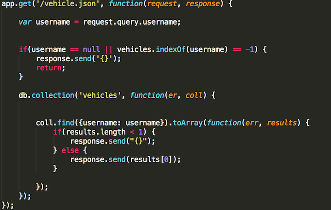

The product is a ride server similar to uber. Theres a mongodb/express/heroku/nodejs server that accepts
a post to /rides a get to / and a get to /vehicles.json with a query called username
I was hired to try to find as many security and privacy problems as I can
I tried XSS cross site scripting via curl
The second thing I did was look at the source code for the server
Then I tried NOSQL injections by issuing GET requests from my browser to /vehicles.json
Then I tried putting [$ne] with my username query
Then I tried directly connecting to the mongo database
I could not break it. Code is secure.
I could not break the code because the server checked all the data I sent it for unwanted data types
The server did not check the data sent for GET /vehicles.json. However, since all the server does with that information is issue a find request in the database, any unwanted data would result in {} being sent back

When I tried to connect to the mongo database without a valid username/password, the database would not let
me do anything. I tried to show collections, insert items, both were denied.
When I connected to the mongo database with a valid username/password, I was able to do anything to it, including putting malicious scripts inside
However, in order to get this information they would have to hack Heroku so this security flaw wasn't really much of a flaw
Something that was intentional but dangerous is cross site scripting. Any website has acccess to all information of the server. This is something that allows notuber to work but also allows any website to access the information that notuber can access.
Data validation is key to security. GET /vehicle.json should validate the querystring
1. "MongoDB: Preventing common vulnerabilities in the MEAN stack" (2017). Link: https://www.synopsys.com/blogs/software-security/preventing-common-mean-stack-vulnerabilities/
2. "Hacking NodeJS and MongoDB" (2014). Link: https://blog.websecurify.com/2014/08/hacking-nodejs-and-mongodb.html